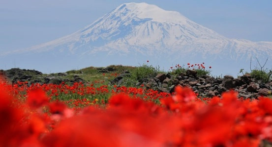
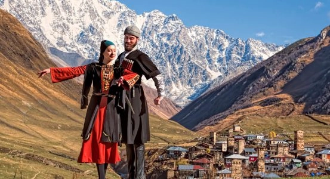
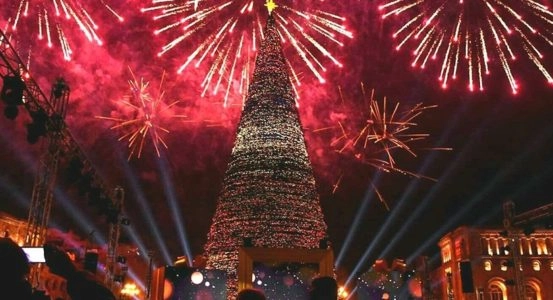
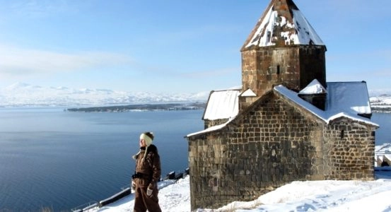
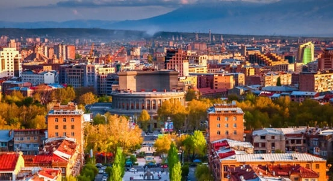
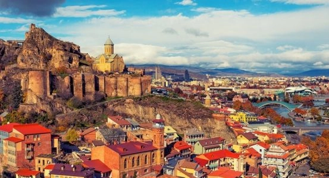
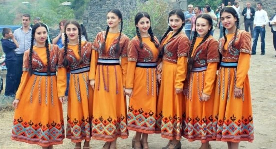

Շրջագայություններ դեպի Հայաստան 2024 - մատչելի և բացառիկ տուրերի գներ
Հայաստան ուղևորություն գնելը երբեք այսքան հեշտ չի եղել։ Հայաստանում, Լեռնային Ղարաբաղում և Վրաստանում մեր պատրաստի տուրերի կատալոգին ծանոթանալուց հետո կարող եք հեշտությամբ կատարել ձեր ընտրությունը։ Կայքն առաջարկում է ինչպես դասական էքսկուրսիաների, այնպես էլ թեմատիկ շրջագայությունների մեծ ընտրանի, և, ամենայն հավանականությամբ, այստեղ կգտնեք ձեր հաջորդ հանգստի ծրագիր: Ռուսական բոլոր տոների և արձակուրդների համար մենք ունենք խմբակային շրջագայություններ երաշխավորված բոլոր ներառական ճամփորդություններով. պարզապես անհրաժեշտ է լուծել օդային ճանապարհորդության հարցը: Նաև անհատական պատվերով ցանկացած տուր փաթեթ կարող է խմբագրվել ձեր պահանջներին համապատասխան: Եթե դուք ընդհանրապես չեք գտել համապատասխան երթուղի, մեր խորհրդատուները այն կստեղծեն ձեզ համար անվճար:

Դասական շրջագայություն դեպի Հայաստան – Մեծ գեղեցկություն
 Տևողությունը՝ 7 օր
Տևողությունը՝ 7 օր
Էքսկուրսիա գաստրոնոմիական ծրագիր Հայաստանի հյուսիսային մարզերում.
16 նոյ - 22 նոյ | Բոլոր ամսաթվերը
սկսած 243,153 դրամ.

Դասական տուր Հայաստան և Վրաստան և այլ Վրացական տեսարժան վայրեր
Տևողությունը՝ 8 օր
Երևանն ու Թբիլիսին մրցում են հյուրընկալության մեջ ով հաղթող կճանաչվի՞
05 նոյ - 12 նոյ | Բոլոր ամսաթվերը
սկսած 290,791 դրամ.

Ամանորը Հայաստանում 2025 – Ամանորյա տուր
Տևողությունը՝ 8 օր
Ամանորյա շրջագայություն՝ նշելու տպավորիչ և պայծառ Ամանոր և Սուրբ Ծնունդ Հայաստանում։
29 Դեկ - 05 Հուն | Բոլոր ամսաթվերը
սկսած 284,836 դրամ.

Դասական ձմեռային տուր դեպի Հայաստան 2025թ
Տևողությունը՝ 7 օր
Ձմեռային Երևան, ձյունաճերմակ լեռնային բնապատկերներ և հայկական օջախի ջերմություն.
02 Հուն - 08 Հուն | Բոլոր ամսաթվերը
սկսած 218,341 դրամ.

Դեպի Հայաստան՝ արևի համար. էքսկուրսիա գաստրո տուր (7 մարզ)
Տևողությունը՝ 7 օր
Էքսկուրսիա գաստրոնոմիական ծրագիր Հայաստանի հյուսիսային մարզերում.
16 նոյ - 22 նոյ | Բոլոր ամսաթվերը
սկսած 350,000 դրամ.
Գաստրոնոմիկ շրջագայություն Հայաստան – Գուրման փառատոն
Տևողությունը՝ 7 օր
Բացահայտեք հայկական ավանդական խոհանոցի գաղտնիքները
02 նոյ - 08 նոյ | Բոլոր ամսաթվերը
սկսած 260,000 դրամ.

Դասական շրջագայություն Վրաստան – 2024 թ
Տևողությունը՝ 7 օր
Ծրագիրը ներառում է Վրաստանի ամենահայտնի էքսկուրսիոն երթուղիները։
02 Դեկ - 08 Դեկ | Բոլոր ամսաթվերը
սկսած 220,000 դրամ.

Էքսկուրսիա դեպի Հայաստան 5 օրով
Տևողությունը՝ 7 օր
Հայաստանի տեսարժան վայրերի շրջայցը հինգ հրաշալի էքսկուրսիոն
02 Հուն - 08 Հուն | Բոլոր ամսաթվերը
սկսած 150,000 դրամ.
Самый большой выбор отдыха в Армении —
экскурсии и курорты
Наиболее посещаемые курорты, города и пункты
назначения на турах по Армении, которые включены в наши туристические маршруты.